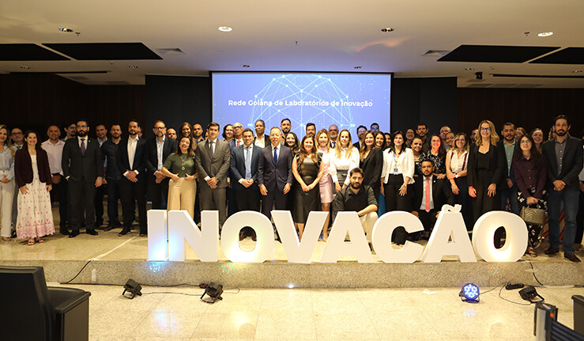
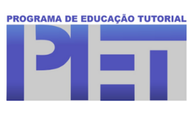
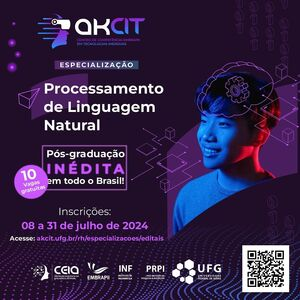

| Nova Professora Visitante no Instituto de Informática | UFG celebra termo de cooperação técnica interinstitucional entre laboratórios de inovação de Goiás | Prorrogado prazo para submissão de projetos para criação de novos Grupos PET | UFG e TJGO usam Inteligência Artificial para simplificar o ‘juridiquês’ |
|---|---|---|---|
| O Instituto dá boas vindas à professora visitante, profa. Dra. Zuly Mary Briceño, venezuelana | Criada a Rede Goiana de Laboratórios de Inovação, integrada pelo INF/UFG | Proposta de criação de novos grupos do Programa de Educação Tutorial (PET) | Plataforma lançada no fim do mês de fevereiro tem por objetivo tornar as decisões tomadas em processos judiciais compreensíveis a todas as pessoas. |
| O Instituto de Informática está ofertando 2 vagas para Professor Substituto para a área de Ciência da Computação | Divulgação do Edital de Seleção de Alunos Regulares do Programa de Pós-Graduação em Ciência da Computação, Mestrado e Doutorado 2025 | Especialização em Inovação, Tecnologias Emergentes e Imersivas para Saúde Digital | Especialização em Processamento de Linguagem Natural |
|---|---|---|---|
| O Instituto de Informática está ofertando 2 vagas para Professor Substituto para a área de Ciência da Computação | O Programa de Pós-Graduação em Ciência da Computação informa que as inscrições para o processo seletivo de alunos regulares para ingresso em 2025 poderão ser realizadas no período de 09/09/2024 a 15/10/2024 (até às 16h). | O AKCIT está com inscrições abertas para a primeira Pós-Graduação Lato Sensu em Inovação, Tecnologias Emergentes e Imersivas para Saúde Digital do país, reconhecida pelo MEC | Plataforma lançada no fim do mês de fevereiro tem por objetivo tornar as decisões tomadas em processos judiciais compreensíveis a todas as pessoas. |